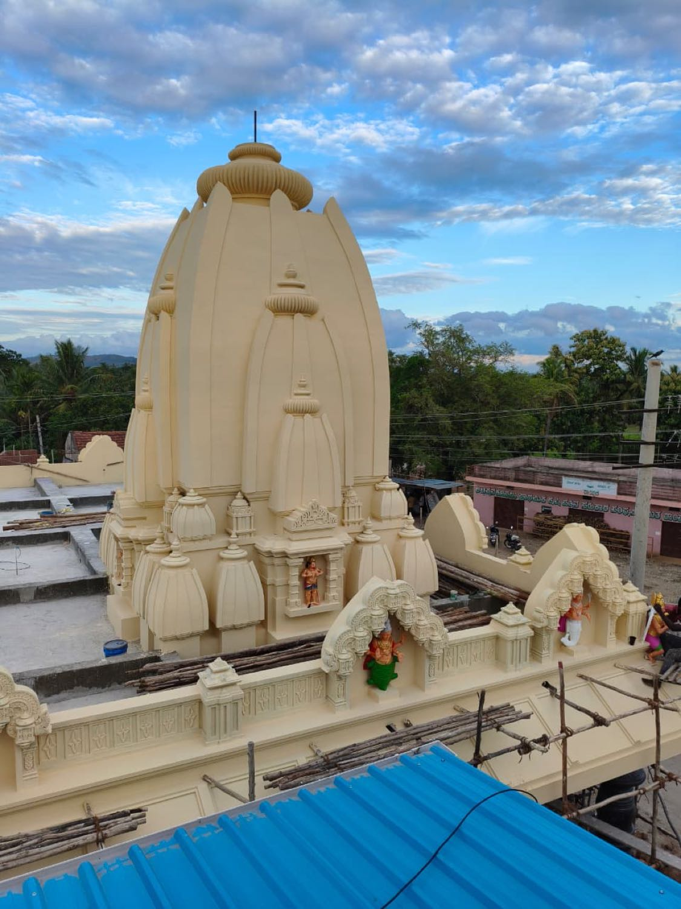
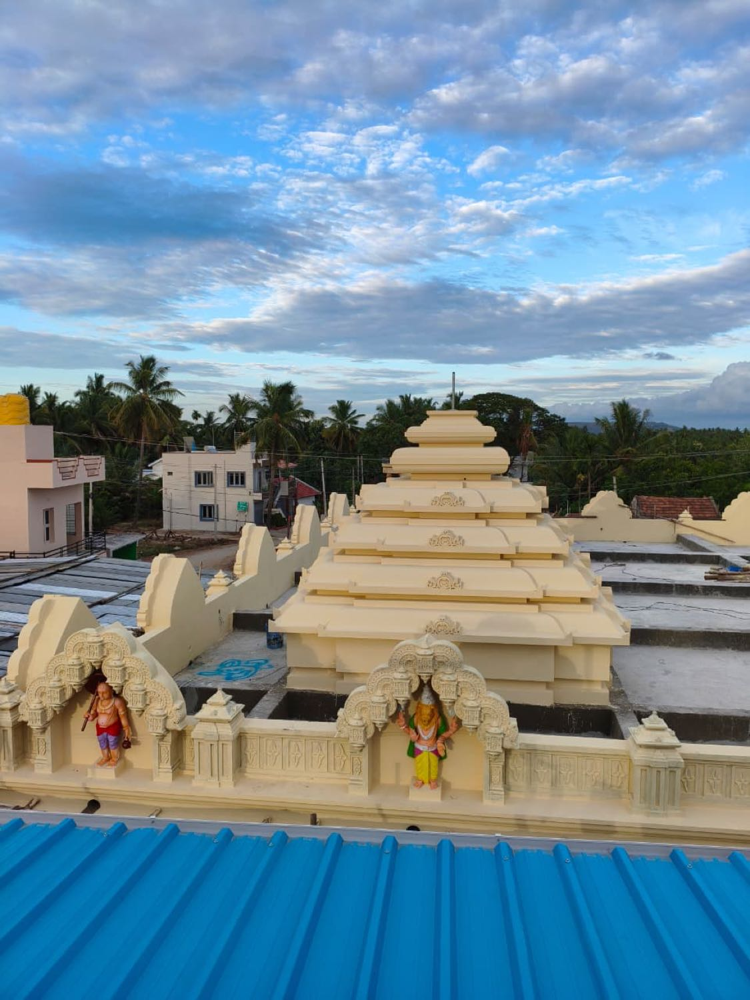
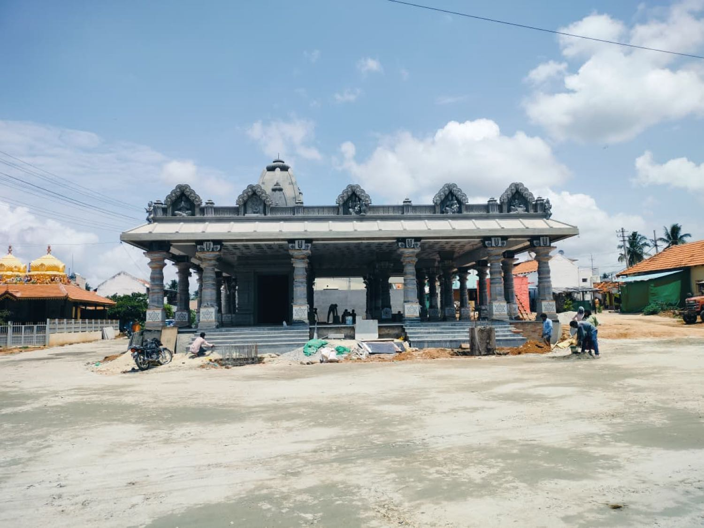
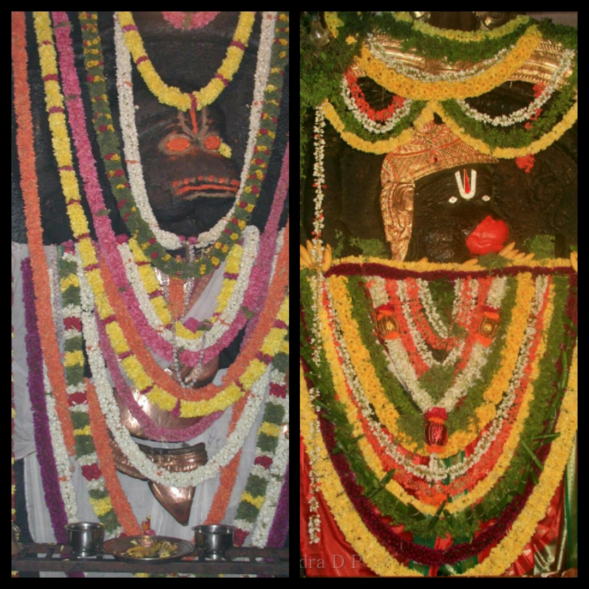
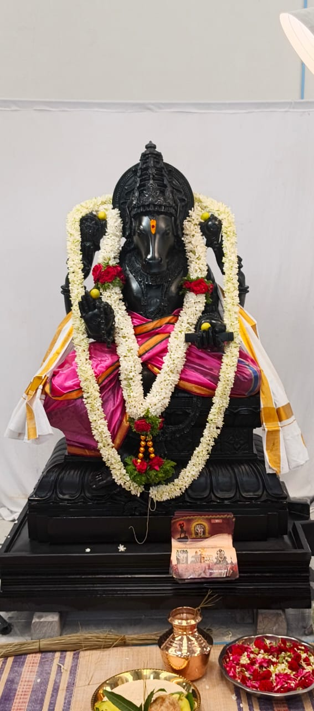
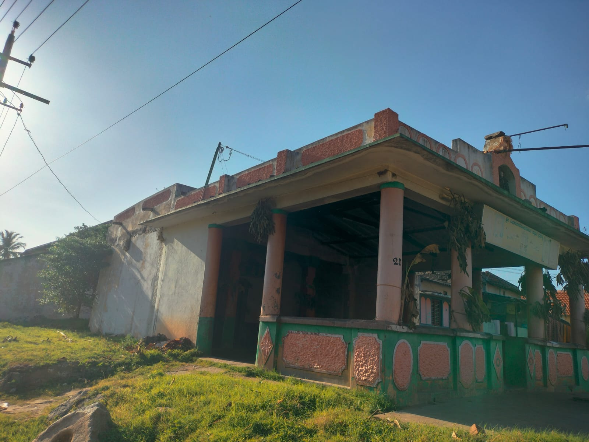

The Great Anjaneya
~ 9 feet
Dodda Anjaneya
The Great Anjaneya: towering, north-facing, His right hand raised in abhaya mudra. A small bell hangs at the tip of his tail, a quiet sign of the sages who once worshipped here.
“Swift as the wind, still as the river; here Anjaneya abides.”
Choose a pooja and an open date, share your sankalpa details, and pay securely by UPI or card. Your confirmation and a reminder arrive on WhatsApp.
In the presence of the entire Rampura gramastharu and devotees from far and near, on July 3 – 5, 2026, this temple witnessed the
The kalashas were poured, the prana prathishte of both Swamys was performed, and the rathotsava circled the village. The temple now stands consecrated.
We offer our gratitude to every hand and every heart that made the three days possible.
With respectful regards · Devatha Family
D.R. Krishna Prasad · D.K. Sathyavathi · D.K. Pranav · M.I Srisha · D.P. Takshvi · D.K. Ramitha
Renewed over a year and consecrated at the Maha Kumbhabhishekam of July 2026: a new shikhara raised in the curvilinear Kalinga manner, a layered southern vimana, and a granite mandapam standing on twenty-seven pillars.



The mandapam stands on twenty-seven pillars, one for each nakshatra of the lunar zodiac. Find your birth-star; at its pillar, the priests perform Nakshatra Dosha Parihara.
Twenty-seven pillars, one for each nakshatra; a mandapam for the twelve rasis; the giver of learning; and resident Veda pandits for the great life-samskaras.
At the pillar of your birth-star, for relief from nakshatra afflictions.
In the Rasi mandapam, for the afflictions of your zodiac sign.
Aksharabyasa before Sri Vidya Hayagreeva, giver of learning.
The 60th-year shanti, performed by the temple's resident Veda pandits.
The 70th-year shanti and a blessing for long life.
The grand abhisheka poured from a thousand kalashas.
Swift as the mind, equal in speed to the wind, master of the senses, foremost among the wise: son of the wind-god, chief of the vanara host, the messenger of Sri Rama; to him I bow my head.

The deity at Rampura is an ancient mūrti, traditionally said to have been consecrated by Sri Vyasaraja, the great Madhva saint of the Vijayanagara age.
During the forest exile, Sri Ramachandra is said to have passed through this region by way of Chunchanakatte, and to have beheld the Kālapurusha resting here. Long after, Sri Vyasaraja consecrated 1,008 idols of Hanuman across the land. They stand to this day, scattered across India, and this kshetra is one among them.
A second tradition tells that the prāna-pratishthā was performed by Sri Gautama Maharshi, one of the Sapta-Rishis, in the Pāncharātra Āgama way. The little bell at the tip of Anjaneya's tail is, they say, the sign that Gautama once walked here.
And the Puranas whisper that near this very kshetra, Ahalya was released from her long stone-curse, touched by Rama's foot, returning to herself after centuries of silence.
Sri Vyasaraja set down not one, but two idols at Rampura. Both face the north, both hold the gesture of fearlessness; each has a small bell at the tail.
The Great Anjaneya: towering, north-facing, His right hand raised in abhaya mudra. A small bell hangs at the tip of his tail, a quiet sign of the sages who once worshipped here.
The Child Anjaneya: pointing to the rashi chakra, warding off the afflictions of the Sun and the nine planets. At his feet lies the sleeping Kālapurusha himself.
Rampura sits on the bank of the Cauvery, held on each of its four directions, by an ancient shrine.
Srirangapatna: the sacred island shrine of Sri Ranganatha.
The Mysuru hill that dispels every fear.
T. Narasipura: at the Tirumakudalu confluence of three rivers.
The earth-restoring boar incarnation of Vishnu.
For generations, the Swamy at Rampura has been said to grant these particular blessings. The abhisheka tirtha, especially, is held to relieve children of the doshas of Saturn and the Navagrahas.
For couples praying for healthy, virtuous children.
For obstacles in career and livelihood to be removed.
For delays and difficulties in marriage to be resolved.
The abhisheka tirtha is held to cure childhood diseases.
Relief from the afflictions of Saturn and the nine planets. Nakshatra Dosha Parihara →

Beside the historic Doddaanjaneya garbhagudi, a new sanctum rises for Sri Vidya Hayagreeva, the horse-faced form of Vishnu, deity of learning. The idol has been carved from black Krishna shila by the celebrated sculptor Adithya yogiraj, whose Ram Lalla vigraha now stands at Ayodhya.
The shrine's story →The temple opens at first light. Mornings are best for abhisheka, evenings for the deeparadhana. Children are welcome. Footwear, as always, stays behind.
Directions & timings →